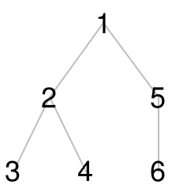

Lightweight, Lazy Trees
| (require data/lazytree) | package: lazytree |
Lightweight, general-purpose utilities for working with tree-structured data.
This module provides a means to leverage the natural hierarchical structure of nested lists (and streams) to represent and perform computations on arbitrary tree-structured data. By using it, applications can keep tree-related operations abstracted, without needing to re-implement standard tree operations for every tree-structured data type or even explicitly represent the tree at all. Additionally, this module provides utilities to conveniently translate between different tree representations, so that these utilities can be used regardless of source format, and the results of computations can be translated into any desired output format.
1 Schema
'(1 (2 (3) (4)) (5 (6)))

Trees of this schema may be translated to any format (such as the original source format) by using the export-tree interface. As make-tree likewise enables converting any input tree representation to this schema, these two interfaces could be used in tandem to translate between two different data representations involving the tree-structured data, independently of any of the other utilities provided by this module.
2 API
procedure
(make-tree f node #:with-data dataf #:empty-pred empty-pred) → sequence? f : (-> any/c sequence?) node : any/c dataf : identity empty-pred : false.
What if my data has cycles in it? Then the data is technically a graph rather than a tree, but with some cunning you can still use these interfaces to perform tree-structured operations on it. First, you’ll need to ensure that the function f provided to make-tree excludes "visited" nodes so that such cycles are not present in the resulting tree (f would probably need to be a closure to keep track of visited nodes). Additionally, bear in mind that this derived tree wouldn’t contain all of the edges from the original data, so exporting it via export-tree would not reconstruct the original data but the derived tree representation.
> (struct taxon (name children)) > (define dog (taxon "Dog" '())) > (define cat (taxon "Cat" '())) > (define mammal (taxon "Mammal" (list dog cat))) > (export-tree list (make-tree taxon-children mammal)) (list (taxon "Mammal" (list (taxon "Dog" '()) (taxon "Cat" '()))) (list (taxon "Dog" '())) (list (taxon "Cat" '())))
> (export-tree list (make-tree taxon-children mammal #:with-data taxon-name)) '("Mammal" ("Dog") ("Cat"))
> (data '(1 (2 (3) (4)) (5 (6)))) 1
> (children '(1 (2 (3) (4)) (5 (6)))) '((2 (3) (4)) (5 (6)))
> (->list (map data (children '(1 (2 (3) (4)) (5 (6)))))) '(2 5)
procedure
(tree-traverse t [ #:order order #:converse? converse?]) → sequence? t : sequence? order : (one-of/c 'pre 'post 'in 'level) = 'pre converse? : boolean? = #f
> (define t '(1 (2 (3) (4)) (5 (6)))) > (->list (tree-traverse #:order 'pre t)) '(1 2 3 4 5 6)
> (->list (tree-traverse #:converse? #t #:order 'pre t)) '(1 5 6 2 4 3)
> (->list (tree-traverse #:order 'post t)) '(3 4 2 6 5 1)
> (->list (tree-traverse #:order 'in t)) '(3 2 4 1 6 5)
> (->list (tree-traverse #:order 'level t)) '(1 2 5 3 4 6)
> (struct taxon (name children)) > (define dog (taxon "Dog" '())) > (define cat (taxon "Cat" '())) > (define mammal (taxon "Mammal" (list dog cat)))
> (define t (make-tree taxon-children mammal #:with-data taxon-name)) > (->list (tree-traverse #:order 'pre t)) '("Mammal" "Dog" "Cat")
> (->list (tree-traverse #:order 'post t)) '("Dog" "Cat" "Mammal")
> (->list (tree-traverse #:order 'in t)) '("Dog" "Mammal" "Cat")
> (->list (tree-traverse #:order 'level t)) '("Mammal" "Dog" "Cat")
> (->list (tree-traverse #:converse? #t #:order 'pre t)) '("Mammal" "Cat" "Dog")
> (define t '(1 (2 (3) (4)) (5 (6)))) > (export-tree list (tree-map sqr t)) '(1 (4 (9) (16)) (25 (36)))
> (struct taxon (name children)) > (define dog (taxon "Dog" '())) > (define cat (taxon "Cat" '())) > (define mammal (taxon "Mammal" (list dog cat))) > (define t (make-tree taxon-children mammal)) > (export-tree list (tree-map taxon-name t)) '("Mammal" ("Dog") ("Cat"))
> (struct taxon (name children)) > (define dog (taxon "Dog" '())) > (define cat (taxon "Cat" '())) > (define mammal (taxon "Mammal" (list dog cat)))
> (define t (make-tree taxon-children mammal #:with-data taxon-name))
> (export-tree list (tree-filter (lambda (v) (/= v "Dog")) t)) '("Mammal" ("Cat"))
procedure
(tree-fold f t [ base #:order order #:converse? converse? #:argument-order argument-order #:with-steps? with-steps?]) → any/c f : (-> any/c any/c any/c) t : sequence? base : any/c = undefined order : (one-of/c 'pre 'post 'in 'level) = 'pre converse? : boolean? = #f argument-order : (one-of/c 'abb 'bab) = 'abb with-steps? : boolean? = #f
See tree-accumulate for another way to fold over trees.
> (struct taxon (name children)) > (define dog (taxon "Dog" '())) > (define cat (taxon "Cat" '())) > (define mammal (taxon "Mammal" (list dog cat)))
> (define t (make-tree taxon-children mammal #:with-data taxon-name)) > (tree-fold ~ t) "CatDogMammal"
> (tree-fold #:order 'post ~ t) "MammalCatDog"
To learn more about how this interface works, see Fold with Trees.
> (define t '(1 (2 (3) (4)) (5 (6)))) > (tree-accumulate + t) 21
> (define (size t) (tree-accumulate (λ (v . vs) (apply + 1 vs)) t)) > (size t) 6
> (define (depth t) (tree-accumulate (λ (v . vs) (if (empty? vs) 1 (add1 (apply max vs)))) t)) > (depth t) 3
> (define (preorder t) (tree-accumulate (λ (v . vs) (if (empty? vs) (list v) (join (append (list (list v)) vs)))) t)) > (preorder t) '(1 2 3 4 5 6)
procedure
(export-tree f tree #:empty-cons empty-cons) → sequence?
f : procedure? tree : sequence? empty-cons : #f
As make-tree supports any input tree representation and export-tree supports any output representation, these two interfaces could be used in tandem to translate between two different data representations involving the tree-structured data, independently of any of the other utilities provided by this module.
> (export-tree list (make-tree rest '(1 (2 (3) (4)) (5 (6))) #:with-data first)) '(1 (2 (3) (4)) (5 (6)))
> (struct taxon (name children) #:transparent) > (define dog (taxon "Dog" '())) > (define cat (taxon "Cat" '())) > (define mammal (taxon "Mammal" (list dog cat)))
> (export-tree (λ tree (taxon (first tree) (rest tree))) (make-tree taxon-children mammal #:with-data taxon-name)) (taxon "Mammal" (list (taxon "Dog" '()) (taxon "Cat" '())))
> (export-tree list (make-tree taxon-children mammal #:with-data taxon-name)) '("Mammal" ("Dog") ("Cat"))
> (struct node (data left right) #:transparent)
> (struct empty-tree () #:transparent)
> (define (node-children t) (list (node-left t) (node-right t)))
> (define tree (node 1 (node 2 (empty-tree) (node 3 (empty-tree) (empty-tree))) (empty-tree)))
> (export-tree node (make-tree node-children tree #:with-data node-data #:empty-pred empty-tree?) #:empty-cons empty-tree) (node 1 (node 2 (empty-tree) (node 3 (empty-tree) (empty-tree))) (empty-tree))
> (struct node-too (data children) #:transparent)
> (export-tree (λ tree (node-too (first tree) (rest tree))) (make-tree node-children tree #:with-data node-data #:empty-pred empty-tree?)) (node-too 1 (list (node-too 2 (list (node-too 3 '())))))
3 Working With Symbolic Expressions
A common type of data that you might work with in Lisp-land is a symex, also known as a symbolic expression, S-expression, or, as it is sometimes called in Racket, a datum. A symex is just the usual syntax in the Lisp family of languages, and is defined recursively as either being a list of symexes or an atom, the latter class of which forms the syntactic base case and includes e.g. literals and identifiers. We have already seen that nested lists are naturally tree-structured, and this means that we can use the interfaces in this module to manipulate them, although the structure with symexes is a little different from the canonical nested list representation we have been using.
Whatever the format of the tree-structured data, in order to use these interfaces on it, we first need to extract a canonical tree representation using make-tree. To do this, we must ask, "What are the nodes in this representation? And how do we get the children of each node?" Let’s look at an example: (+ 1 (* 2 3)). There are a couple of different choices we could make here. The first is to treat the operator as the data in the node and the operands as the children. Another choice we could make is to consider sub-expressions of this expression to correspond to nodes in the tree, with the whole expression itself being the data content of the root node. Each of these options could be useful in different cases; let’s look at them in turn.
In the first option, since the operator is always first in a symex, with the remaining elements being operands, we’d like to use first as the data function, and rest as f to indicate the children in the make-tree interface. But symexes could also be atoms and not just lists, so we’d need to handle this case as well. Specifically, if the symex is an atom, we’d want to use the expression itself as the data, and null as the list of children.
As an example, we could use such a representation to write a simple "tree accumulation" style Lisp interpreter.
> (define expression '(+ (* 2 3) (- 10 (* 3 12)))) > (eval expression) -20
> (define t (make-tree #:with-data (λ (v) (if (list? v) (first v) v)) (λ (v) (if (list? v) (rest v) null)) expression))
> (define (tree-eval v . args) (if (empty? args) (eval v) (apply (eval v) args)))
> (define (my-eval expr) (tree-accumulate tree-eval expr)) > (my-eval t) -20
For the second option, we seek to treat the expressions themselves as the data contents of each node. Since the default behavior with make-tree is already to treat the input itself as the data in the node, it only remains to pass in an appropriate function f which will produce a list of the children of a given node. For the example here, it would seem that this function should be identity (or equivalently, values) since the expression itself is a list consisting of the children we’ve identified. But what about the sub-expression + which is an atomic node? The function f must return a list of children, but calling values on + does not produce a list. In this case, what we want is for the function to produce the empty list, since the node + has no sub-expressions, i.e. no children. So, what we are looking for is a function that returns the input if the input is a list, and the empty list if it is an atom, that is to say, something like (λ (v) (if (list? v) v null)).
In the previous example we saw that the first representation allowed us to implement a simple Lisp interpreter. We got the answer we were looking for, but what if we wanted to see the steps involved in the evaluation? We could emulate these steps in the second representation by traversing the tree using an appropriate traversal and evaluating the results, since each node in this representation represents an entire subexpression used in computing the overall result.
> (define expression '(+ (* 2 3) (- 10 (* 3 12)))) > (eval expression) -20
> (->list (map eval (tree-traverse #:order 'post #:converse? #t (make-tree (λ (v) (if (list? v) v null)) expression)))) '(12 3 #<procedure:*> 36 10 #<procedure:-> -26 3 2 #<procedure:*> 6 #<procedure:+> -20)
The interfaces in this module may also be useful in writing parsers and macros, where you may need to transform syntax (trees) in a structured way.